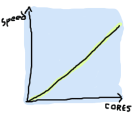

介绍
关于本教程
这是趣学Erlang的开篇介绍，阅读本教程也许是你学习Erlang的一个开始
首先我有这个想法是因为我阅读了利波瓦卡(Miran Lipovača)的 趣学Haskell(LYAH) 教程； 我认为他做的工作充分的展示了语言的美丽，同时让语言学习过程更加友好。 由于我和他很熟识，我曾问他，我来写Erlang的版本如何。 他感觉这主意不错，并且他本人对Erlang也有一些兴趣。
所以我开始编写这个教程。 当然我写本教程还有其它动机：主要我发现语言入门有点困难(要么使用文档稀缺的网站或者你买一本书), 并且我认为像趣学Haskell的那种入门指南是对社区有益处的。 更重要的是, 我见过好多人，都是通过非常笼统的言论过度的称赞或贬低Erlang。之后就有人认为Erlang只不过是一个噱头。如果我想通过别的方式说服这些人，我认为是不会很快受到这些人的关注。
希望本书成为有命令式语言编程基础(如 C/C++, Java, Python, Ruby, 等) 和那些知道或不知道函数式编程 (Haskell, Scala, Erlang, Clojure, OCaml...)的人的入门指南。 我也希望写一本没有偏见的书，阐述Erlang是什么，它的有点和它的缺点都是什么。
什么是Erlang
首先，Erlang是一门函数式语言。 如果你使用过命令式语言, 像这样的语句 i++ 对你来说很熟悉;
但是在函数式语言中，这是不被允许的。 事实上，改变一个变量的值是被严格禁止的！ 这看起来有点古怪。 只是，如果你想想起你的数学课程，这就是事实中你曾经学习过的：
y = 2 x = y + 3 x = 2 + 3 x = 5
我添加了下面这个例子:
x = 5 + 1 x = x ∴ 5 = 6
你也许会感到困惑。 函数式语言认为: 如果我定义 x 是 5, 之后，那么就不能从逻辑上声称变量 x 的值同时是6！ 这样是不可靠的。 这也是为什么相同的函数相同的参数总返回相同的结果:
x = add_two_to(3) = 5 ∴ x = 5
函数接受相同参数时总返回相同的结果被称为引用透明。
这将允许我们用5来替换 add_two_to(3) ，因为计算 3+2 的结果将永远是5。
这代表着我们可以用很多函数组合再一起去解决一个问题，并且我们可以非常确信我们将得到我们想要的结果。
(That means we can then glue dozens of functions together in order to resolve more complex problems while being sure nothing will break.)
这难道不是非常清晰且符合逻辑的吗？(Logical and clean isn't it?) 然而下面这个例子就有问题了:
x = today() = 2009/10/22 -- wait a day -- x = today() = 2009/10/23 x = x ∴ 2009/10/22 = 2009/10/23
天哪！ 我完美的等式！在一瞬间它们全变成错误的了！ 为什么我的函数每天都会返回一个不同的结果呢？
很明显，在某些情况下打破引用透明是必须的。(Obviously, there are some cases where it's useful to break referential transparency.) Erlang是一个非常务实的函数式编程语言：遵循纯函数的相关规则(引用透明，避免可变数据， 等等）， 但是当面对部分现实世界的问题的时候，它打破这一规则。
当前，我们将Erlang定义为函数式语言， 但是它同样具备高可靠和高并发的特性。 为了能在同一个时间内，执行大量的任务， Erlang使用actor模型， 并且在Erlang的虚拟机中，每个actor都是一个Erlang的进程。 简而言之，如果你是Erlang世界中的一个actor， 你将是一个孤独的个体，在一间没有窗户的小黑屋子中，守着一个邮箱等待消息的到来。 一旦你收到了一个消息， 你将使用以下方式处理： 你需要在接收消息的时候支付邮资，当你收到了生日贺卡你会回复感谢并且忽略那些你不能读懂的消息。
Erlang的actor模型，可以被认为是一个所有人都坐在自己的屋子中处理不同任务的世界。 所有人之间的通信，只有通过邮件，且仅有这么一个方式。 尽管这听起来挺无聊的（这将是邮递服务的一个全新的时代）， 这代表着你可以要求别人帮你处理一些特殊的任务，并且没有人会做错事情或者做出影响别人工作的错误；他们甚至都不知道除你之外的别人的存在（这非常好）。
比喻到此为止， Erlang强制你写actors（Erlang进程）， 除了通过消息传递进行通信，这些Erlang进程除了代码外不共享任何信息或数据。每次通信都是准确的，安全的并且可追踪的。
当我们定义Erlang时，我们是在一个语言层面上，但是从广义上讲，这并不是Erlang的全部：Erlang不单是一个语言，也是一个整体的开发环境。 Erlang的代码被编译成字节码，并使用Erlang虚拟机来运行。所以Erlang更像Java或者这种类型的加强版，可以跨平台运行。标准的发型版包含开发工具（编译器，调试器，profiler，测试框架）， Open Telecom Platform (OTP) Framework，一个Web服务器，一个Parser生成器， 和支持分布式，嵌套事务的Mneisa数据库，该数据库可以让你轻松的存储Erlang数据。
虚拟机和库都支持代码热更新，并且提供了简单且强大的代码部署和容错机制。

我们将使用这些工具获得更多的可靠性，但是现在，我将告诉你Erlang的基本策略： 让它崩溃。 并不像一个有很多乘客的飞机坠毁那样，更像一个有足够安全措施的走钢丝表演者一样。 虽然你应当避免犯错，但是在绝大部分情况下，你不需要检查每个类型和错误条件。
Erlang的从错误中恢复， 使用actor模型来组织代码，通过使用并发和分布式让整个系统可动态扩容这些很棒的特性，我们将在以后的章节逐步介绍。
不要盲从(Don't drink too much Kool-Aid)
在这本书中，将有很多这个标题的黄橙色的小条（你很容易辨识它们的）。 由于很多热门话题的讨论，Erlang变得比以前普及了一些，但是这些热门的话题讨论导致人们对Erlang有一些言过其实的认知。 (Erlang is currently gaining lots of popularity due to zealous talks which may lead people to believe it's more than what it really is.) 这些小条，将帮助你不至于飘飘然。 (These reminders will be there to help you keep your feet on the ground if you're one of these overenthusiastic learners.)
第一个例子是关于Erlang的扩展能力的，因为Erlang使用了轻量级的进程才使Erlang具有很强的扩展能力。 Erlang的进程确实非常轻量级：在同一个时刻，我们可以拥有成百上千的Erlang进程，但是这不代表你因为能这样才去这样使用它。 举个例子， 创建一个连子弹都是actor的射击游戏是很疯狂的。如果你真的这么做了，那么很有可能把事情搞砸。(The only thing you'll shoot with a game like this is your own foot.) 虽然发送消息代价很小，但是过度的拆分任务，你会让任务变慢的！
当我们学习了足够多知识，我将深入的说明这方面我们真正需要关心的是什么，目前，我们只需要记得，随便的使用并行去解决某个问题并不一定能带来速度的提升。 (I'll cover this with more depth when we're far enough into the learning to actually worry about it, but just keep in mind that randomly throwing parallelism at a problem is not enough to make it go fast.) 不过不要伤心；我们将会有很多机会去使用成百上千的进程！只不过，不是每次都需要。
一个说法是Erlang的扩展能力和电脑的CPU数量成正比的方式，但这通常是不正确的：  虽然这是可能的，但是绝大部分问题是不能转化成一组可并行的完全相同的行为。
同时，请谨记： 即便Erlang做某些事情非常好，并且从技术角度上讲，做一件事情时可以获得和使用其它语言相同的结果。 反过来一样；我们需要谨慎的评估我们面对的问题，并根据问题选择合适的工具。 Erlang并非银弹，并且做某些事情非常差，如图像处理，信号处理和系统的驱动等。 但是非常适合大规模的服务端软件（例如：消息队列，map-reduce计算），还有配合其它语言使用，高级协议实现等。 而是否适合都根据你的判断。你没有必要把自己使用Erlang的范围限制在服务端软件：曾经有人用它做出了一些让人意想不到的东西。 一个例子是IANO，UNICT团队创造的一个机器人，该机器人使用Erlang编写的人工智能系统，并在2009年赢得了银牌。eurobot competition。 另一个例子是Wings 3D， 一个Erlang编写的跨平台的3D建模工具（但不是一个渲染器）。
我们如何开始
所有你必须的，一个文本编辑器和Erlang环境。 你可以从以下地方获取Erlang官方网站。 我不想太多介绍安装细节，对于Windows，只需要下载安装即可。 不过不要忘记将Erlang文件夹添加到系统变量PATH中，这样我们才能通过命令行使用它。
在Debian系Linux发型版上，你可以用 $ apt-get install erlang来安装。
在Fedora上（如果你安装了yum），你可以使用 # yum install erlang来安装。
但是，这些仓库中的Erlang版本都是非常老旧的。
当你使用本教程的一些例子的时候，使用老版本的Erlang会给你带来一些不同或者性能问题。
因此我推荐你从代码编译一个Erlang。
使用google去搜索安装相关的问题和翻阅README文件，将会比我能给出的答案更好。
在FreeBSD上，这就都看你自己的决定了。如果你用portmaster， portmaster lang/erlang。
如果使用Ports系统, 可以这样 cd /usr/ports/lang/erlang; make install clean。
如果，你只用packages系统，那么执行 pkg_add -rv erlang。
如果你用OSX，那么用brew安装是不错的选择 $ brew install erlang （Homebrew）
或者使用 $ port install erlang （如果你更喜欢MacPorts。）
另一个选择， Erlang Solutions Ltd. 提供了绝大部分都可以完美工作的主流操作系统安装包。
注意: 在些本书的时候，我使用的版本是R13B+，建议使用此版本或更新的版本。
从何处获得帮助
这里有几处可以让你得到帮助。如果使用Linux，可以翻阅man手册。
Erlang 有一个叫lists的模块：获得该模块的文档，只需要 $ erl -man lists。
在Windows上, 安装包将包含HTML文档。当然你可以从此处下载 official erlang site， 或翻阅 cleaner alternative sites。
编码风格和实践here 。 本书的代码都遵循这些风格。
当你你想知道更多的技术细节，请关注Erlang官方邮件列表 mailing list（你应当订阅该列表，从中可以学习不少），以及irc.freenode.net上#erlang 频道。
另一个不错的地方trapexit。他们制作了邮件列表的镜像，并将它们分类成了论坛和Wiki，这非常有用。
夹带点私料，两个专业的QQ群：59293159（中国Erlang俱乐部），230538511（Hacking Erlang）。非专业QQ群：111477336（函数式语言编程）。